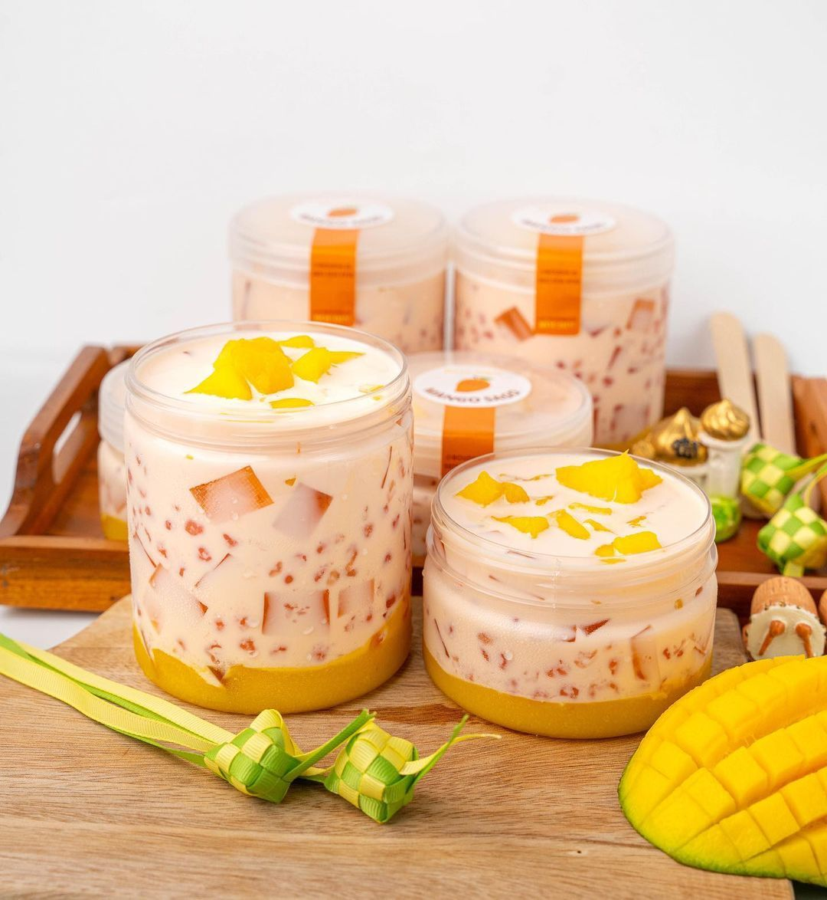

Selamat datang di Masak Simple No Ribet
Manggo Saggo Recipe from MasakSimpleNoRibet

Manggo Saggo
Ingredients :
-
2 buah mangga arum manis matang
-
Sagu mutiara 100 gr
-
Susu cair evaporasi 1 kaleng
-
25 gram kental manis (atau sesuai selera)
-
Puding Mangga
Instruksi :
- Siapkan semua bahan yang dibutuhkan, kemudian masak sagu mutiara dan puding
- kemudian, satu buah mangga di jus halus dan satu buah mangga lagi di potong dadu
- Puding yang telah jadi tidak lupa juga di pototng dadu
- selanjutnya, Siapkan wadah besar untuk membuat manggo sago
- Masukkan semua bahan yang telah disiapkan kecuali jus mangga
- Aduk adonan tersebut
- kemudian siapkan wadh yang lebih kecil dan taungkan jus mangganya
- Terakhir tinggal masukkan adonan manggo sago ke wadah kecil yang berisi jus dan simpan ke dalam kulkas
- Manggo Sago siap di hidangkan
Berikan Komentar dari resep diatas, recipe dari MasakSimpleNoRibet
Seberapa enak dan simple resep makanan ini, boleh di isi yaa!